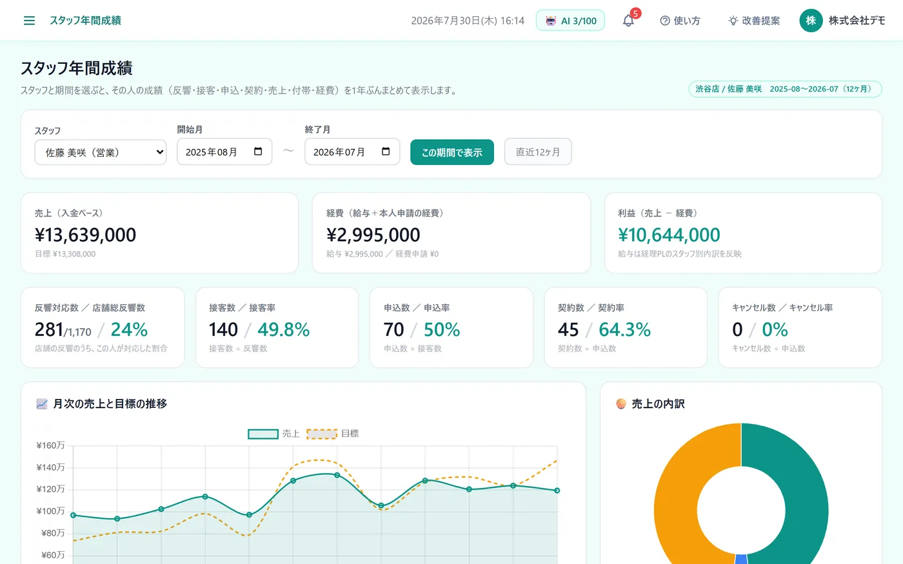

こんな困りごとに
- スタッフの評価が、売上の合計だけになっている
- 誰が、どの段階（接客・申込・契約）でつまずいているのか見えない
- 面談のたびに、1年分の数字を手で集めている
この機能でできること
- スタッフごとに反響→接客→申込→契約と、キャンセル数・売上・目標・達成率を一覧
- 接客率（接客数÷反響数）・成約率（申込数÷接客数）を自動で計算
- スタッフ1人の1年間の成績を、数字・表・グラフで表示
メニューの場所左メニュー「営業分析」「バックオフィス › スタッフ年間成績」
使い方（3ステップ）
-
1
スタッフ別の数字を見る
左メニューの「営業分析」を開くと、スタッフ別KPIの表に、スタッフごとの反響→接客→申込→契約と、キャンセル数・売上・目標・達成率が並びます。達成率はバーで色分けされます。
-
2
1人の推移を開く
スタッフの行を押すと、その人の6か月の推移グラフと、昨年同月との比較が下に開きます。
-
3
1年間の成績をまとめて見る
左メニュー「バックオフィス › スタッフ年間成績」でスタッフと期間を選ぶと、売上・経費・利益と、反響・接客・申込・契約の動きを、1年ぶんの表とグラフで確認できます。

よくある質問
数字は手で入力する必要がありますか？
実績は、反響管理表・接客管理表・申込管理表などから自動で集計されます。目標額は、スタッフごとに「編集」から入れます（実績を直接直すこともできます）。
表に出る項目の名前を、自社の呼び方に変えられますか？
変えられます。「⚙ KPI項目の編集」から、反響数・来店数・申込数などの表示名の変更と、使わない項目の非表示ができます（オーナー／店長）。